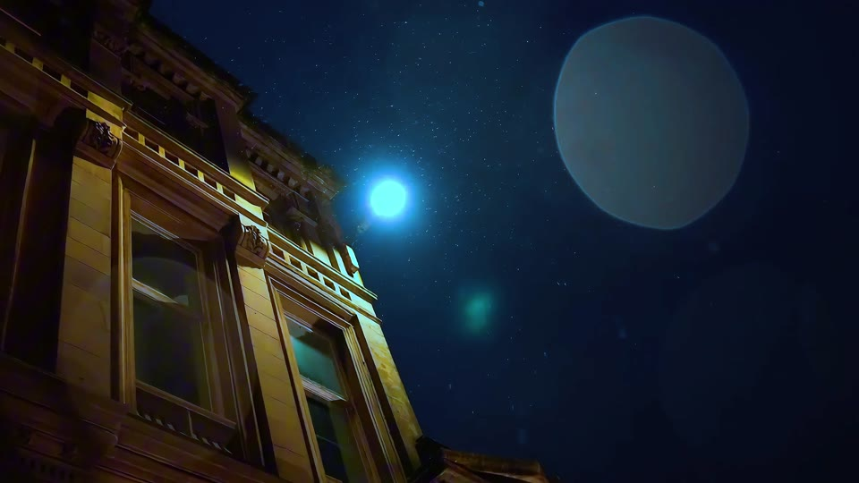
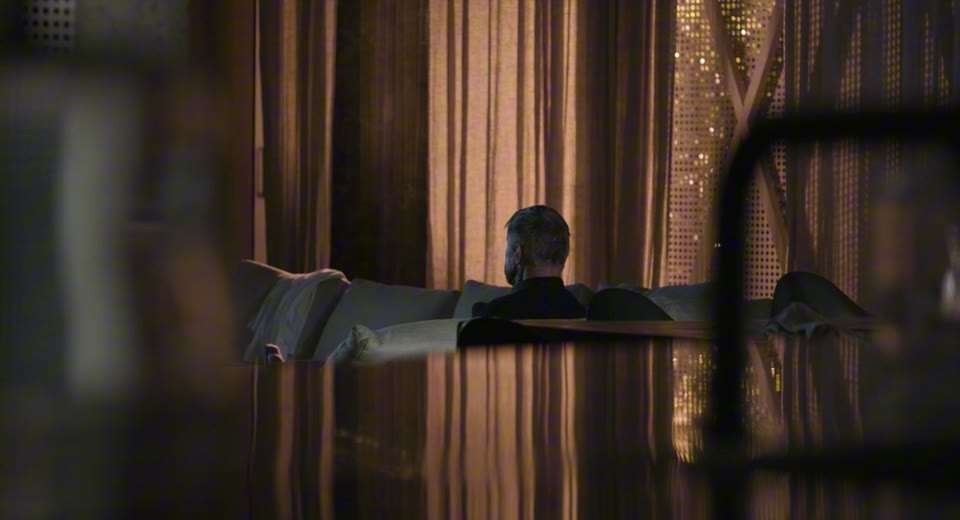
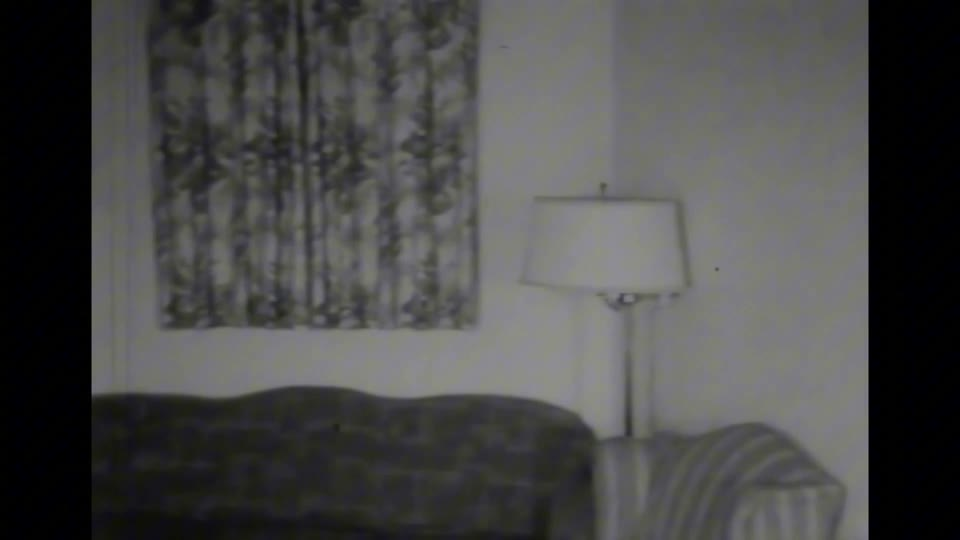

01
教育背景
格拉斯哥艺术学院 · 动态影像声音 · 硕士
2025.09 — 2026.11声音交互设计 / 多模态用户体验 / 沉浸式交互原型 / 杜比全景声与空间音频
湖北工业大学 · 产品设计 · 学士
2020.09 — 2024.06交互设计原理 / 用户研究 / 人机工程学 / 数字媒体基础
张诚扬 / 影音交互设计
游戏 UI · 交互影像 · 沉浸式体验
探索作品 ↓01 · About
 Portfolio · 2026
N° 315802 / ZCY
Portfolio · 2026
N° 315802 / ZCY
影音交互设计 · 交互影像体验
声音设计 / 沉浸式空间 / 游戏交互
湖北工业大学校学生会副主席 & 院学生会文体部部长
穿搭——展示个性、拒绝同质化；旅行——游历过全球十多个国家。

TEAMFIGHT TACTICS

FPS TALENT SYSTEM

LANSYNC · ROBOTICS, CONNECTED

CHINESE DREAMCORE

VANISHING FIREWORKS

ENDLESS CORRIDOR

ECHOING STEPS
MOVING IMAGE & SOUND
三部作品 · 点击封面观看

02:5901 / 影像创作

06:4602 / 音频重制

05:5403 / 剪辑与音效
连接声音、影像与空间，
探索屏幕之内与之外的交互。